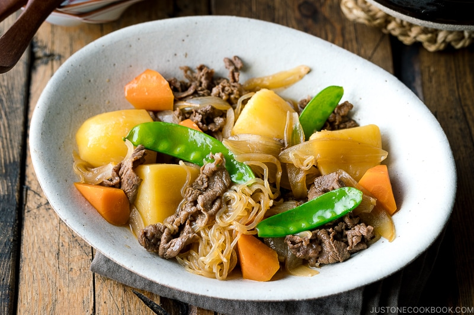

Nikujaga

What is Nikujaga?
As two of the main ingredients are niku (meat) and jagaimo (potatoes),
Nikujaga (肉じゃが) literally means “meat and potatoes”. It is an iconic
Japanese home-cooked dish, known as “Ofukuro no Aji” – taste of mother’s
cooking. For many, nikujaga is an honest-to-goodness comfort food.
Potatoes make up the majority of the dish, with some thinly sliced beef or
pork, onion, shirataki noodles (ito konnyaku), and colorful mix of
vegetables. In western Japan, nikujaga typically features beef while pork
is more commonly used in eastern Japan.
It is a classic Yoshoku, a western-influenced Japanese food, appeared in
the late 19th century. Here, the ingredients are stewed in soy sauce,
sugar, sake, and mirin, along with dashi (or water) in a pot, rendering a
familiar Japanese flavor.
Ingredients
- 1 onion (8.8 oz, 250 g)
- 1 carrot (4.5 oz, 127 g)
-
3 Yukon gold potatoes (1.2 lb, 546 g; Yukon keeps its shape better
during simmering, but I also make Nikujaga with Russet, which tends to
break easily but absorb flavors nicely)
- 1 package shirataki noodles (7 oz, 200 g)
-
227 g thinly sliced beef (chuck or rib eye) (it can be thinly sliced
pork; skip for vegan/vegetarian and use shiitake, king oyster, or
portobello mushrooms as a substitute)
-
8 pieces snow peas (1 oz, 28 g; you can also use green beans or green
peas)
- 1 Tbsp neutral-flavored oil (vegetable, rice bran, canola, etc.)
For Seasonings
-
480 ml dashi (Japanese soup stock; click to learn more) (Use Kombu Dashi
for vegan/vegetarian)
- 60 ml mirin
- 60 ml soy sauce
- 60 ml sake
- 1 Tbsp sugar
Steps
-
Gather all the ingredients. Cut the sliced meat in half about 3 inch
(7.6 cm) wide..
- Cut the onion in half and into ½-inch (1.3 cm) wedges.
-
Peel the carrot and cut it into 1 inch (2.5 cm) pieces. Here, I use a
Japanese cutting technique called Rangiri, where we cut the carrot
diagonally while rotating it a quarter between cuts. This helps to
create more surface spaces so it will cook faster and absorb more
flavors.
- Cut each potato into quarters
-
Remove the sharp edges of the potatoes with a knife to create smooth
corners. Soak the potatoes in water to remove starch. Tip: We call this
Japanese cutting technique "mentori". This prevents the potatoes from
breaking into pieces. If the potato has sharp edges, they are likely to
bump into each other and break easily while simmering.
- Remove strings from snow peas.
-
Bring a small pot of water to a boil and add a pinch of salt. Add the
snow peas.
- Cook them in boiling water for 1 minute and take them out.
-
Drain shirataki noodles from the package and roughly cut them in half.
Cook the noodles in boiling water for 1 minute to remove the unwanted
smell.
-
Drain well and set aside. Cut the thinly-sliced beef into 3 pieces
(depending on the size).
-
In a large pot (I used a 4-QT Staub Cocotte), heat oil on medium heat
and sauté the onion.
-
When the onion is coated with oil, add the meat and cook until no longer
pink.
-
Add the potatoes and coat them well with cooking liquid. Tip: This
coating will prevent the potatoes from breaking.
- Add the carrot and shirataki noodles and mix them all together.
-
Add dashi and make sure it's just enough to cover the ingredients (it
doesn't have to fully cover the ingredients).
-
Cover to cook. Once boiling, with a fine-mesh skimmer, skim the scum and
foam.
- Add the seasonings (sugar, sake, soy sauce, and mirin).
-
Mix all together and place an otoshibuta (drop lid) on top of the
ingredients.
-
Simmer on low heat for 12-14 minutes, or until a skewer pierces through
a potato easily. Tip: The otoshibuta is necessary to maintain the shape
of the vegetables. They bump into each other and break easily when they
are loose. Do not mix the ingredients while cooking; the otoshibuta will
help the flavor circulate automatically.
-
Turn off the heat and remove the otoshibuta. Ideally, let it stand
(uncovered) for 30-60 minutes before serving. The flavors will soak into
the ingredients while cooling down.